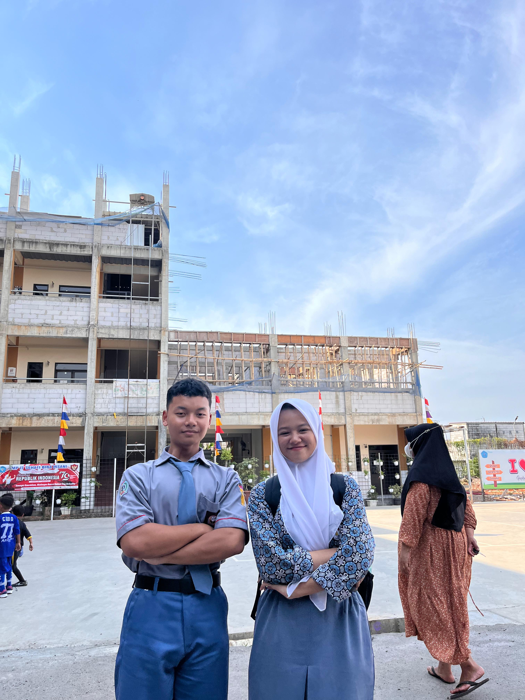

Home
About
Contact

Umar khanif
Tentang saya
Hobi: Basket, Wokrkout, Memasak, Baca buku, Lari, Mendengarkan musik
Tinggal: Perum cengkong Persada
Skills: Bisa membuat vilpi jatuh cinta meski vilpi tak cinta
Browser Anda tidak mendukung elemen audio.
🎵